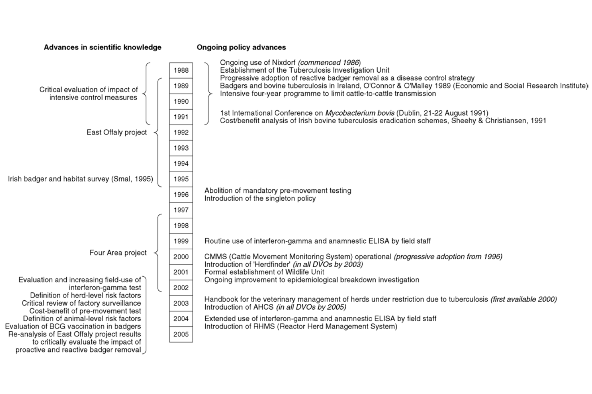
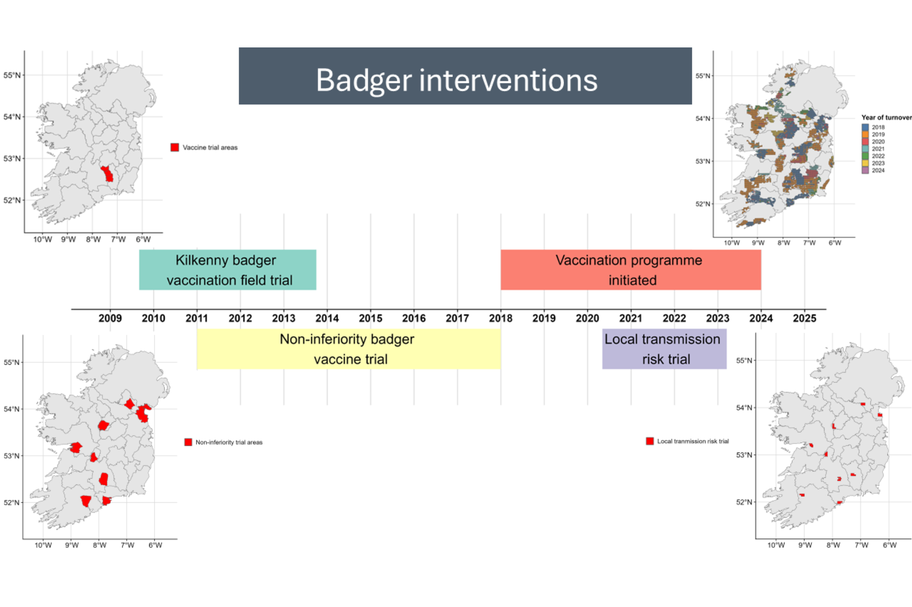

1 Irsh bTB eradication programme timeline
1.1 Recent timeline plot
Although the focus in the paper is on data from 2008-2023, here we go slightly further back to help understand important changes to the programme that happended in earlier years.
\(~\) \(~\)
\(~\) \(~\)
\(~\) \(~\)
1.2 Historic timeline plot (1988-2005)
The following image has been extracted from More SJ & Good M 2006 with permission.

\(~\) \(~\)
\(~\) \(~\)
1.3 Spatial location and timeline of badger trials (after 2005)
The plot below does not include two badger trials that occured much earlier:
- East Offaly project (1988–1995)
Ó Máirtín D, Williams DH, Griffin JM, Dolan L, Eves JA. The effect of a badger removal programme on the incidence of tuberculosis in an Irish cattle population. Preventive Veterinary Medicine. 1998;34:47–56. doi: 10.1016/s0167-5877(97)00067-6 The effect of a badger removal programme on the incidence of tuberculosis in an Irish cattle population https://www.sciencedirect.com/science/article/pii/S0167587797000676 1998
Eves JA. Impact of badger removal on bovine tuberculosis in east County Offaly. Irish Veterinary Journal. 1999;52:199–203
- Four area badger culling trial (1997 - 2002) (also known as reference area trial)
The impact of badger removal on the control of tuberculosis in cattle herds in Ireland. Griffin, J.M.,illiams,.H., Kelly, G.E.,legg,T.., O’Boyle, I.,ollins, J.. and More,.J. (2005). Preventive Veterinary Medicine 67: 237-266 https://pubmed.ncbi.nlm.nih.gov/15748755/
Tuberculosis in cattle: the results of the four-area project Griffin et al. 2005 https://pmc.ncbi.nlm.nih.gov/articles/PMC3113914/pdf/2046-0481-58-11-629.pdf

\(~\) \(~\)
\(~\) \(~\)
1.4 Irish bTB eradication trends/timeline references
Watchorn, R.C.(1965). Bovine Tuberculosis Eradication Scheme 1954-1965. Dublin: Department of Agriculture and Fisheries https://catalog.hathitrust.org/Record/009378520
Sheehy, S.J., Christiansen, K.H., 1992. A cost/benefit analysis of future options for bovine tuberculosis control. Dublin: University College Dublin. https://researchrepository.ucd.ie/server/api/core/bitstreams/4c2b9eee-71b7-4d68-b718-f1cddf7e1f24/content
Good M. Bovine Tuberculosis Eradication in Ireland. 2006. Irish Veterinary Journal. 59(3):March 2006 https://www.bovinetb.info/docs/bovine-tuberculosis-eradication-in-ireland.pdf
More SJ, Good M. The tuberculosis eradication programme in Ireland: a review of scientific and policy advances since 1988. Vet Microbiol. 2006 Feb 25;112(2-4):239-51. doi: 10.1016/j.vetmic.2005.11.022. Epub 2005 Dec 6. PMID: 16337345. https://www.sciencedirect.com/science/article/pii/S0378113505003986?via%3Dihub
Sheridan M. Progress in tuberculosis eradication in Ireland. Vet Microbiol. 2011 Jul 5;151(1-2):160-9. doi: 10.1016/j.vetmic.2011.02.040. Epub 2011 Mar 8. PMID: 21482040. https://pubmed.ncbi.nlm.nih.gov/21482040/
Duignan A, Good M, More SJ. Quality control in the national bovine tuberculosis eradication programme in Ireland. Rev Sci Tech. 2012;31(3):845–60 https://doi.org/10.20506/rst.31.3.2166. PMID: 23520738
Sheridan, M., Good, M., More, S.J. and Gormley, E., 2014. The impact of an integrated wildlife and bovine tuberculosis eradication program in Ireland. Zoonotic Tuberculosis: Mycobacterium bovis and Other Pathogenic Mycobacteria, Third Edition, pp.323-340.https://onlinelibrary.wiley.com/doi/10.1002/9781118474310.ch28
More SJ, Houtsma E, Doyle L, McGrath G, Clegg TA, de la Rua-Domenech R, Duignan A, Blissitt MJ, Dunlop M, Schroeder PG, Pike R, Upton P. Further description of bovine tuberculosis trends in the United Kingdom and the Republic of Ireland, 2003-2015. Vet Rec. 2018 Dec 15;183(23):717. doi: 10.1136/vr.104718. Epub 2018 Nov 28. PMID: 30487295; PMCID: PMC6312888. https://pubmed.ncbi.nlm.nih.gov/30487295/
DAFM bTB eradication programme (New Bovine TB Testing Requirements for animal movements etc) http://www.bovinetb.ie/
1.4.1 Northern Ireland
Robinson PA. A history of bovine tuberculosis eradication policy in Northern Ireland. Epidemiol Infect. 2015 Nov;143(15):3182-95. doi: 10.1017/S0950268815000291. Epub 2015 Mar 17. PMID: 25778830; PMCID: PMC9150964. https://pubmed.ncbi.nlm.nih.gov/25778830/